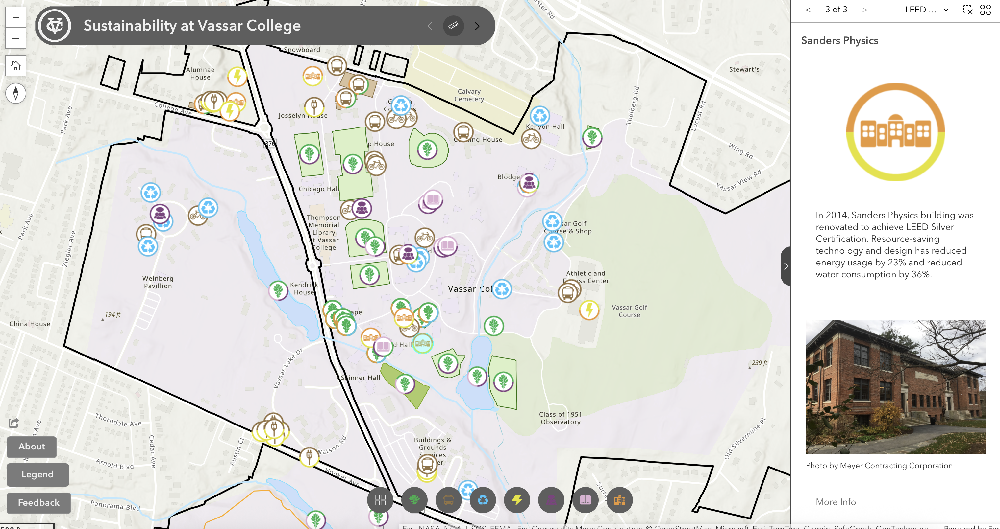
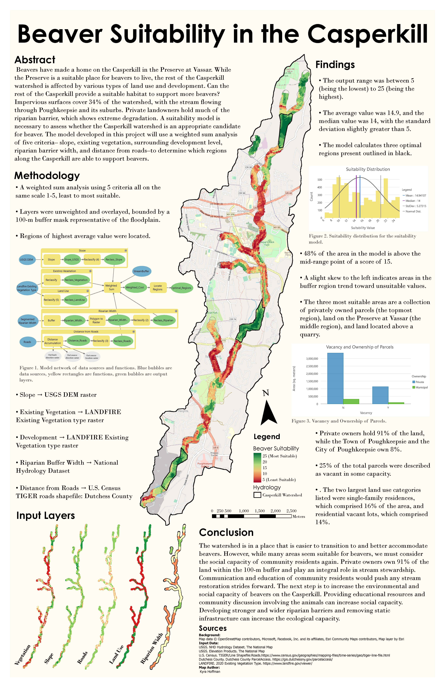
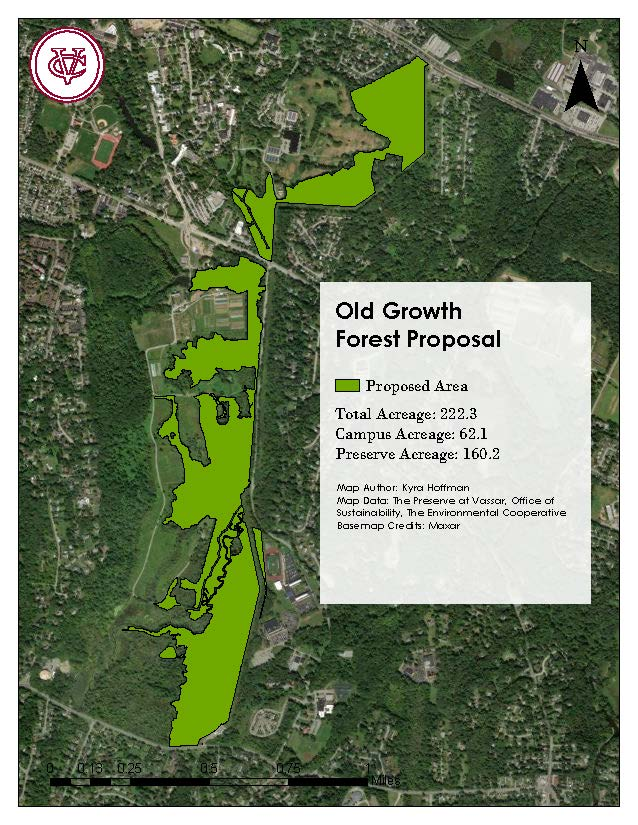

Resume/CV
My Work

Sustainability Map
The sustainability map for Vassar College acts as a point of interaction for many campus stakeholders with the Office of Sustainability. The map is an important hub of information that prospective and current students can learn about renewable energy and waste reduction.

Thesis Model
For my environmental studies thesis, I explored the relationship beavers had to water quality in small urban streams and if this environment was suitable for them.

Old Growth Forest Proposal
The Preserve at Vassar is in the process of establishing a designated section of forest to be protected as future old growth forest.

Nitrate Removal Upscale Model
I was fortunate to continue my thesis research for a post-bacc in the summer after graduating. As part of this research I have developed a model.